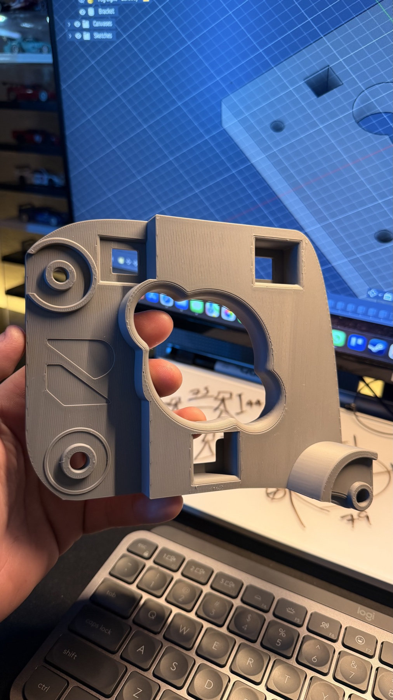
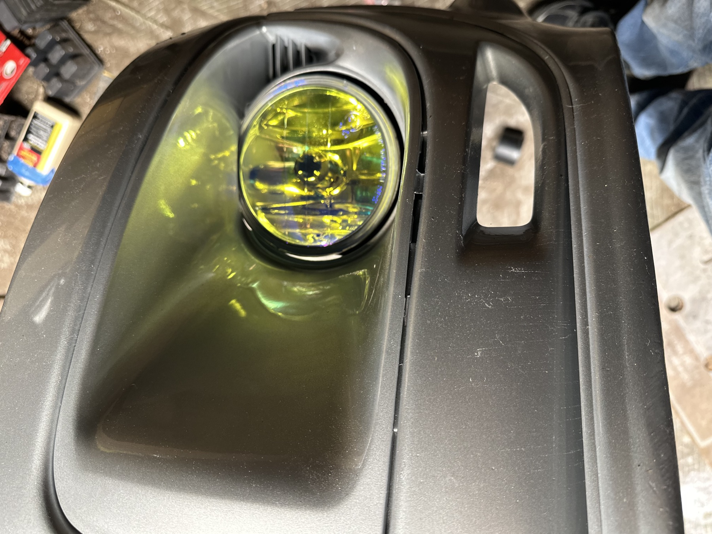
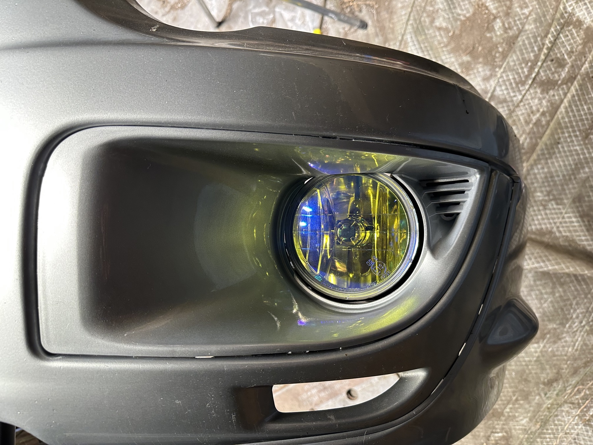
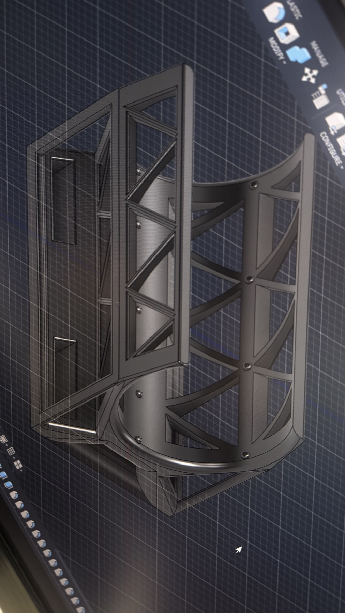
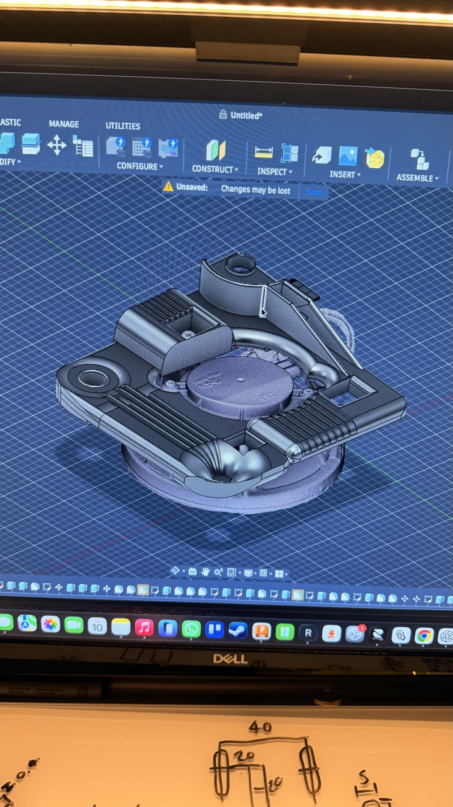
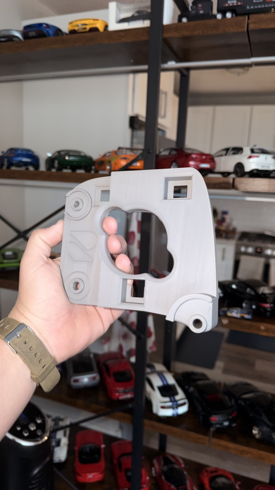
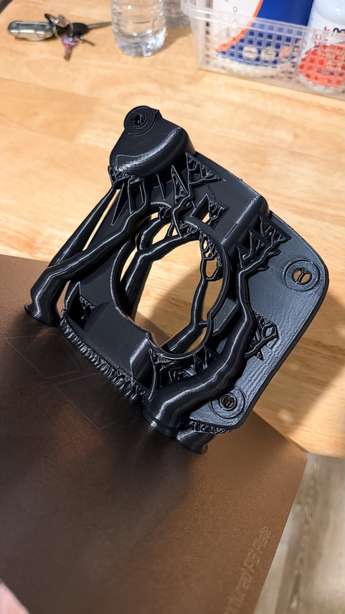
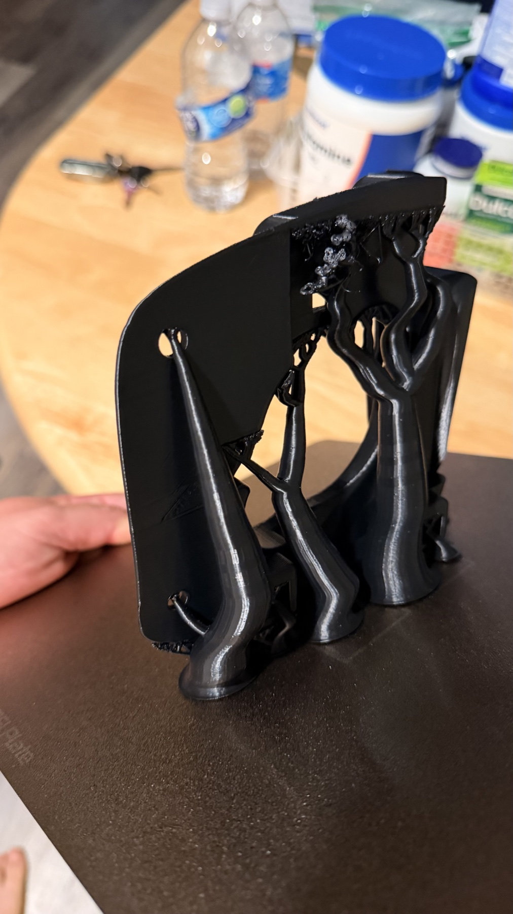
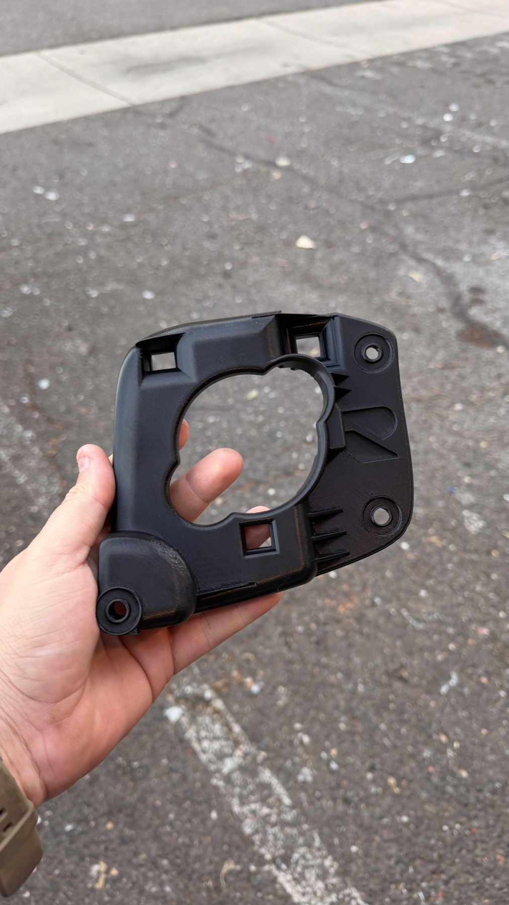

01 / PART AVAILABILITY
Hard-to-source components
If a part is discontinued or absent from the catalog, photos, a physical sample, dimensions, and any available reference number can help establish whether a custom route is practical.
02 / AUTOMOTIVE SERVICECustom 3D parts
When a required part is hard to source or missing from the catalog, Reverso Works reviews the available reference and the vehicle application to assess a custom-design path. Fitment needs, operating conditions, scope, and next steps are discussed before work begins.

01 / SCOPE
Application before fabrication
A replacement part has to do more than match a shape. We begin with the available sample or reference, where the part interfaces with the vehicle, and the conditions it must work in. Not every application is suitable for a custom 3D part.
01 / PART AVAILABILITY
If a part is discontinued or absent from the catalog, photos, a physical sample, dimensions, and any available reference number can help establish whether a custom route is practical.
02 / VEHICLE INTERFACES
Mounting points, adjacent parts, and vehicle variation affect the design. Vehicle year, make, and model help frame an initial review; fitment is confirmed for the specific application.
03 / OPERATING CONDITIONS
Heat, vibration, load, moisture, fluids, and safety-critical functions can affect material and fabrication choices. Suitability is reviewed before a scope is confirmed.
02 / IMAGE RECORDS
Components, CAD views, and vehicle-side details
These supplied images include physical components, CAD views, and lighting details. They are visual references—not a claim that every item shown shares the same vehicle, function, material, or manufacturing method.








Vehicle fitment, exact part identity, and operating limits are assessed per request; a photo alone does not establish them.
03 / WORKFLOW
A reviewable path from reference to scope
The first conversation is used to understand the part and the vehicle application. A design or fabrication path is proposed only after the relevant constraints have been reviewed.
Send photos or a physical sample, vehicle year/make/model, any dimensions or part number, and what the part needs to do.
We look at interfaces, clearances, operating environment, and available measurements. Additional inspection may be needed before feasibility can be assessed.
We discuss whether a custom 3D route is appropriate, the proposed work, and an estimate before any work is authorized.
04 / QUESTIONS
Before you reach out
Yes. Share the original part if available, photos, measurements, and the vehicle details. We can review whether a custom path is practical; not every part can be reproduced responsibly.
No. A clear photo, physical sample, dimensions, or part reference can be a starting point. We will tell you what additional information is needed for your application.
No. Heat, load, vibration, chemical exposure, and safety requirements can make some applications unsuitable. The material and fabrication method must match the intended use.
Include the vehicle year, make, and model; the part or location; what it needs to do; clear photos; and any measurements or reference numbers you have.
05 / CONTACT
Share the part and its application
Send the vehicle details, photos, and what the part needs to do. Reverso Works will respond with the information needed to assess feasibility and the next step.